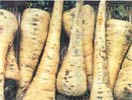
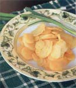

Now is the time to experience parsnips, the ivory jewel of root vegetables.
A greatly misunderstood vegetable today was one of the most popular just two centuries ago. Parsnips (Pastinaca sativa) have a wonderfully sweet, nutty flavor that colder temperatures actually enhance. Their culinary versatility rivals potatoes and their overwintering ability surpasses carrots. If you have never eaten parsnips, you're missing out on a treasure.
Perhaps parsnips have fallen out of favor because many gardeners and cooks think they're persnickety to grow and mysterious to cook. Actually, this root vegetable can be grown anywhere, is relatively easy to grow and a natural for the winter vegetable garden. Always use fresh seed and keep the soil evenly moist until the seedlings have emerged. The best growing conditions include a well-drained and deeply dug soil free of stones, clods or pieces of organic matter that can hinder growth or cause the roots to fork.
The secret to parsnips' crisp, sweet and delicately nutty flavor? Timing. Exposure to cold temperatures (32 degrees to 40 degrees, by frost or cold storage) for two weeks or more sweetens its roots, turning starch into sugar. Parsnips require a long growing season (110 to 130 days), so sow the seeds early enough for the roots to be ready to harvest in autumn, preferably after the first frost.
Whether harvesting your own parsnips or buying them fresh from the supermarket, you'll find the younger roots the sweetest and most tender. (Very large parsnips are usually tough and often bitter.) Select parsnips that are firm and free of blemishes, showing no signs of wilting, shriveling or root hairs. Storing is easy. Homegrown roots can be left in cold gardens to overwinter under a 6- to 12-inch layer of mulch, then dug during winter thaws and in early spring. In areas where winters are mild or excessively rainy, dig roots in late fall and store in a cold room or root cellar (preferably at 32 degrees to 34 degrees and 98 percent to 100 percent humidity) as you would carrots. Of course, the vegetable bin in your refrigerator easily will keep roots handy and fresh for several weeks.
Parsnips are high in fiber and a rich source of folate, potassium and vitamin C. Fresh roots add variety to meals in winter and early spring and often can be used in place of carrots or potatoes. Use fresh parsnips in salads or with dip. Cook them in soup or stews, mash them like potatoes, or include them in a medley of roasted root vegetables. This sweet root is compatible with just about any cooking method, whether baked, steamed, simmered, sautéed, or sliced and fried like chips.
|
 |
 |
|